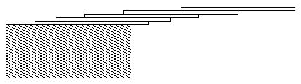

题目描述
你能在一个桌沿叠放几张卡片？如果是一张卡片，你可以尝试最多在桌沿露出一半长度（我们认为是垂直于桌沿线的）。两张卡片，你可以让顶上这张露出一半，下面这张露出桌沿1/3，这时最多
露出 1/2 + 1/3 = 5/6 卡片长度。这样n张卡片，你可以在桌沿露出 1/2 + 1/3 + 1/4 + ... + 1/(n + 1) 长度，即最上面一张露出1/2，第二张露出1/3...最后一张露出1/(n+1)。如图
所示。

输入
输入有多组测试，当输入0.00时输入结束。
每一组测试一行，包含一个正浮点数c，最小0.01，最大5.20，数c保证刚好3个数字。
输出
每组测试输出要满足c长度露在桌外最少叠放多少张卡片。按照样例输出格式输出。
样例输入
1.00
3.71
0.04
5.19
0.00
样例输出
3 card(s)
61 card(s)
1 card(s)
273 card(s)
题意
给定长度,求最少要多少张卡片.
JAVA解法
还没写,坐等大佬!
C++解法
#include<iostream>
using namespace std;
int main(int argc, char *argv[])
{
int cards;
double l,sum;
while(cin>>l){
if(l==0)break;
sum=0;
for(cards=1;sum<l;cards++){
sum+=1.0/(cards+1);
}
cout<<cards - 1<<" card(s)"<<endl;
}
return 0;
}